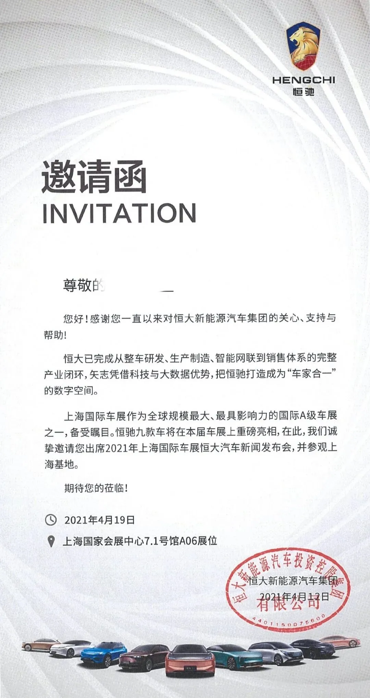
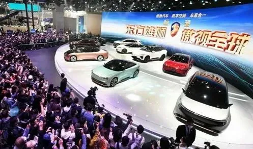
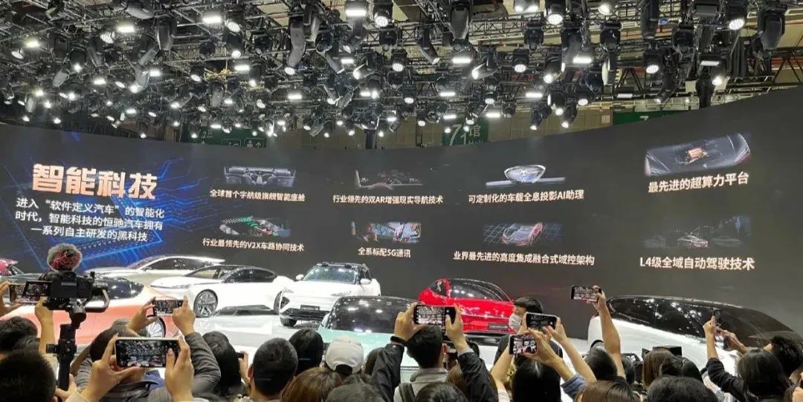
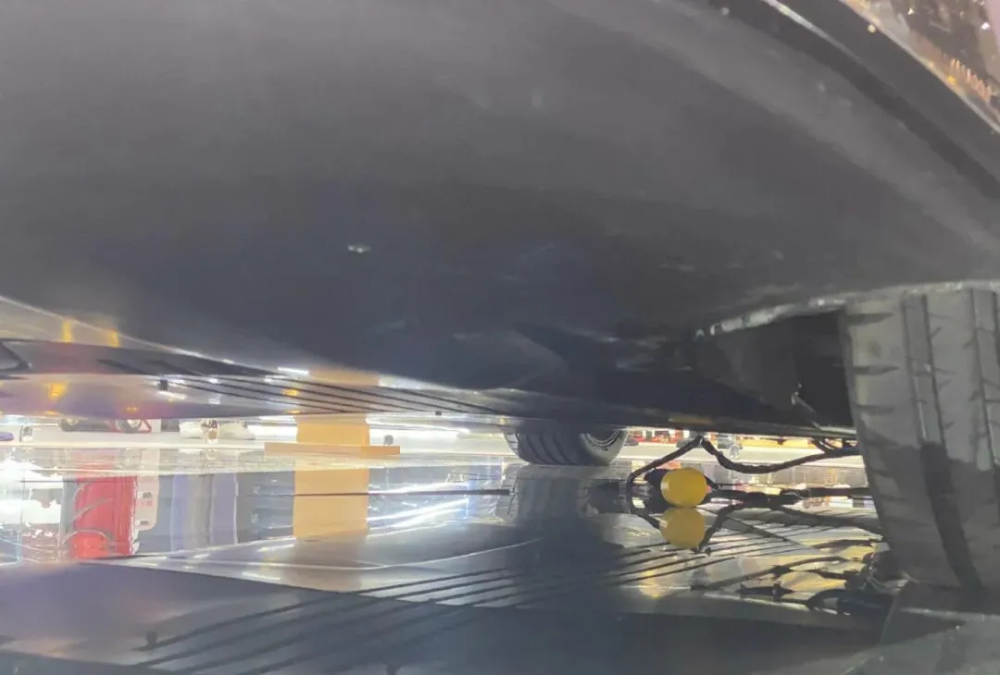
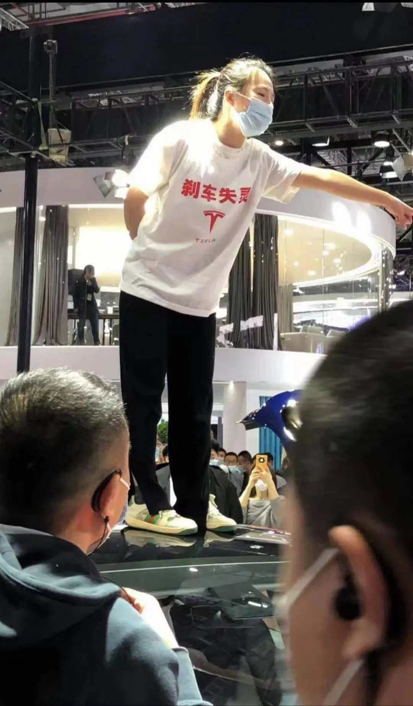
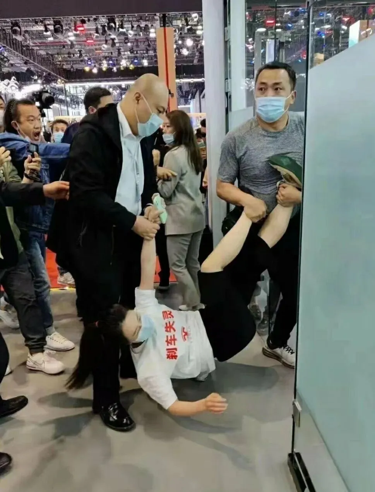

在上海车展看了恒大汽车的葫芦娃兄弟和特斯拉维权事件
在上海车展看了恒大汽车的“葫芦娃兄弟”和特斯拉维权事件
4月19日，上海车展，这场车展还是比较期待的，今天终于盼到了。
对于个人来说，之所以期待，一是想去看看恒大新能源汽车：恒驰，从PPT走进现实后，会是什么样子；二是想看看华为进军汽车领域的第一款合作车：阿尔法S华为HI版。
NO. 1｜壹
恒大汽车本次上海车展，搞了个千家媒体看恒驰的活动。
这个没啥难度，天机从朋友那也搞到了一张，两人合兵一处，一起前去参观恒大版葫芦娃兄弟了（恒驰1-恒驰9）。

到上海车展，一进会展的大门，就是恒驰汽车的广告。
直奔目的地后，看了看恒驰周边其他品牌的展位， 目测宝马的展位面积约3650㎡，蔚来的展位约3200㎡，理想的展位约1750㎡，特斯拉的展位约700㎡。
恒大汽车的展位，约 2 600㎡ 。
恒大新能源汽车的主持人是撒贝宁。就是那位看着马云装逼说自己对钱没兴趣，在一边拼命憋笑的主持人。
恒大的品味一如既往地浓浓乡土气息，像极了大型乡村发布会。

说实在的，车标是真的丑，印个许家印的头像上去，都比这个帅；实在不行，给车标加个爱马仕皮带，也能好看几分。
再看看恒驰的这些描述语，简直通篇违反广告法，各种最：

恒驰的9款展车，从恒驰1-9都在展位上，车灯和造型看着眼熟，总觉得和其他品牌的车有所撞脸。
每台车4个保安，只让站在围挡外看，不能摸，更不能试驾，这有啥意义？只能看个外壳？
不能试驾，那再正常不过的静态体验总该有吧？不好意思，也没有，清一色在外围看恒驰的外壳。
现场进行静态体验的人一个都没看到。至于最后会不会有其他媒体被破例邀请，不得而知，我下午四点离开了车展。
最基本的静态体验啊，就是坐进去看看内饰、转转方向盘、看看动力总成、后备箱啥的......连这个都没有，搞得咱深度怀疑它连座椅都是贴图的。
本着怀疑精神，咱严重怀疑恒驰“葫芦娃系列车”是模型车，搞不好是大型模型展。所以各种想办法想去拍底盘，毕竟内行人看底盘。
前后试了6次，都没拍成，几个保安阴魂不散轮番跟着，就是不让拍；
同场有一男子，趁着保安不注意，极速下蹲，半趴在地上，手往前伸，拍到了底盘。然后，嘀咕着说，原来是个空壳子啊。随即被保安驱逐了。
这位壮士，“偷拍裙底，十恶不赦”，哈哈哈。

车展还有9天，不知道有多少人会想拍恒驰的底盘。恒大此次投入巨额的广告费，一堆跪下唱赞歌的媒体，软文宣广满天飞，”皇帝的新装“。
或者恒大赶紧趁这段时间换个能试驾或静态体验的车来，以免被戳了，尴尬，实在不行，搞个楼盘沙盘，打打广告：买房送恒驰。
今天恒大汽车盘中下跌7.25%，尾盘才拉了回来。
NO. 2｜贰
今天的热门，非特斯拉莫属了。
有几位的特斯拉车主，在车展现场维权。 其中一位河南的女车主， 站 到了车顶上，大声控诉特斯拉质量问题： 刹车失灵。
这位女车主没带喇叭，所以即便声嘶力竭地喊，在嘈杂声一片的现场中，传出的音量显得比较小。
后来人群逐渐围观，现场热闹了起来。

此前，这位车主已多次维权无果。如果不是被逼无奈，谁又愿意这么没脸没皮地在大庭广众之下抛头露面公然维权？
满腹心酸，到了媒体处，估计会成为轻描淡写的几个字：维权存在过激行为。
但实际上，过激的，应该是这样的：

几个壮汉，提着女车主的一只手和双脚，直接拖走了。
去年6月开始，特斯拉类似“失控”事故就频繁发生，2020年6-12月，特斯拉车辆突然“失控”发生的事故有近10起；2021年1月，又有4例特斯拉车辆“失控”事故发生。
此前，美国相关部门已经对246例特斯拉失控加速事件进行了调查。
每个人都需要体面，当 车主被逼到只能 采取这种方式 维护自身合法权益的时候， 特斯拉 真的还需要再这么 侮辱人 吗？
而有三观不正的自媒体，还跪着替特斯拉质量问题洗白，简直让人三观碎裂。
NO. 3｜叁
上周五写了金科的一些年度财报问题，今天有自媒体洗地板， 所以咱 再次唠嗑点金科的， 供地产新人了解。
2011年，金科借壳登陆A股，随即更换了负责审计的会计师事务所，即在重庆大名鼎鼎的天健会计师事务所，至今，天健依然在负责审计金科每年的财务报表。
天健在2013年和2014年，曾采取虚列收入、成本费用不入账等方式帮审计客户隐匿高达5.8亿元的亏损，后事件败露，成为全行业通报的典型案例。
而金科从上市第二年开始，黄董事长及前妻，开始向上市公司放贷，利息在10.9-13%，仅2012年至2014年三年，就收了2.3亿利息。
此外，每年收巨额担保费，费用从1900万到2500万不等。从这这两项操作看，简直把上市公司当摇钱树。就这还想对标龙湖？这是龙湖被黑得最惨的一次。
连深交所都看不下去了，2016年发函问询此事提到，大股东收取担保费的费率是否合理？
金科理直气壮地回复，合理得不能再合理了。简直让人三观碎裂，上市以来，金科对中小股东的态度，是把他们当傻子的模样，无怪乎当年能做出涉嫌勾结徐翔拉高金科股价，坑害股民的事。
2011年，金科在苏州和另一家企业合作开发了个占地20万方的超大盘，拿地的楼板价约2000元/㎡。持续卖了7年，售罄时的售价高达16000元/㎡。
但就是这么个怎么看都不可能亏损的项目，金科在项目房子尚未售罄时就断言它亏损了，在2016年-2017年，金科称该项目亏损，一次性计提并核销了一笔高达6600万的应收款。
玄机在一边嘀咕：搞不好，是放贷亏损收不回来，所以把亏损算到这种明显不可能亏损的合作项目上。
2015年12月，金科和几家投资机构合伙成立了一个新能源基金，被深交所发函问询：公司是否与这几家机构存在关联关系。
金科斩钉截铁地回答：没有关联关系。后来，被扒出关键涉案人孙羽，既是几家投资机构之一的法人兼高管（实控人），还是金科下属全资子公司金科新能源的法人兼股东。
这就是睁眼说瞎话的典型案例。
那几年，“金融迷思”成为企业家的普遍现象，典型的有金科、海航、泰禾等，如今，海航和泰禾是什么样的结局？
金科的黄董事长归来后，金科的牛再度吹大了起来，5年4500亿元，对标龙湖、“假绿档”......
期待着，一个更多戏、更精彩的金科让我们吃瓜群众更有谈资。
相关阅读： 旭辉后，融创107亿天价“迎娶”彰泰 。
若是喜欢和支持，请文末右下角 **“点赞、在看 ** ”，也可及时收到公众号的更新信息。
按日期浏览全部来源（同日按条目标识排序）